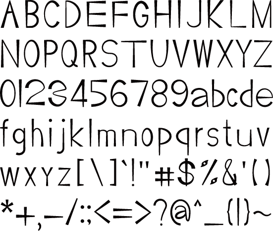
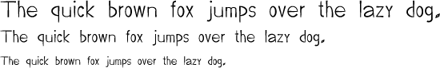
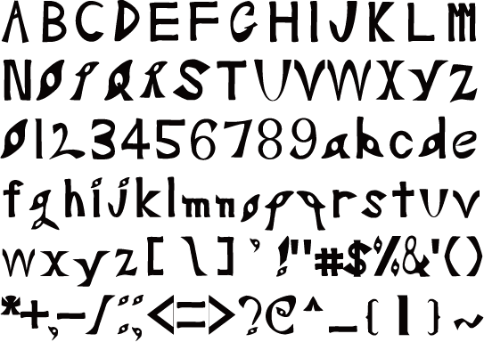
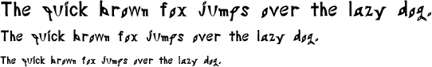

Sato Kanamu
Portfolio
文字のストロークの先端・末端のどちらか一方の太さに違いを出したフォントです。 カッティング手法によりバランスを整え、ラフでキリッとしたデザインです。 文字列にすると軽快なリズムを生み出し、 表示フォントととして活用できます。
 書道独特のはらいの特徴を表したフォントです。 基本的の文字のストロークの途中から末端にかけて徐々に太くしていくことで、はらいの様子を表現している。 独特なこの表現は重圧なイメージを生み出し、威厳のあるフォントとして活用できます。
 